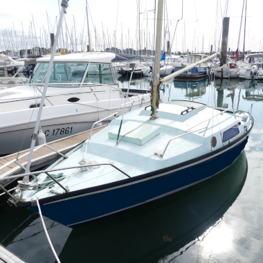

Transmettre, c'est la raison d'être de Passe-Coque qui accompagne depuis 2019 associations et porteurs de projets dans le
domaine de l'économie sociale et solidaire afin de créer un trait d'union entre des bateaux sans projets et des projets sans bateaux.
Découvrez les projets que Passe-Coque a accompagné :
 Nav'Solidaire
Nav'Solidaire
Bateau : Félicie
 Voyages en Patrimoine
Voyages en Patrimoine
Bateau : Passpartout
 Cap Melvan
Cap Melvan
Bateau : Karate 33
 Saudade
Saudade
Bateau : Super Arlequin
 Eh'Tak
Eh'Tak
Bateau : Shipman 28
 Coraxy
Coraxy
Bateau : Cognac
Tri Yann
Bateau : Trimaran Allegro
Afri'can
Bateau : Félicie, Presles
 Taapuna
Taapuna
Bateau : Edel 660
 Manu Oviri
Manu Oviri
Bateau : Comanche
L'Heure Bleue
Bateau : Arpège
Jolly Jumper
Bateau : First 325
Saigane
Bateau : Dufour 2800
Coevic 2
Bateau : Mirage 28
Découvrez les projets que Passe-Coque a accompagné :
Nav'SolidaireBateau : Félicie
Voyages en PatrimoineBateau : Passpartout
Cap MelvanBateau : Karate 33
SaudadeBateau : Super Arlequin
Eh'TakBateau : Shipman 28
CoraxyBateau : Cognac
Tri YannBateau : Trimaran Allegro
Afri'canBateau : Félicie, Presles
TaapunaBateau : Edel 660
Manu OviriBateau : Comanche
L'Heure BleueBateau : Arpège
Jolly JumperBateau : First 325
SaiganeBateau : Dufour 2800

Stiren er Mor
Bateau : Ghibli
Bateau : Ghibli
Coevic 2Bateau : Mirage 28
RÉNOVER & SUR-CYCLER
Passe-Coque, c'est aussi un chantier où toutes les compétences techniques et nautiques s'expriment pour donner une seconde vie aux voiliers.
Passe-Coque intervient sur des projets de "refit" et de transformation de bateaux en habitat léger dans une démarche de sur-cyclage.
PARTAGER